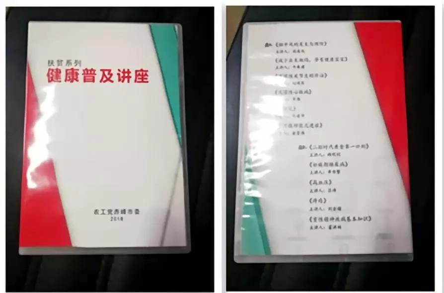

自2018年5月起，农工党赤峰市委充分发挥医药卫生界别优势，先后组织11名农工党医疗专家分别就糖尿病、高血压、心脏病、肝硬化、脑卒中、风湿、甲亢、新生儿疾病筛查等常见病的治疗和预防等内容录制视频讲座，用健康科普的方式助力自治区打赢脱贫攻坚战。

录制的视频中，专家们以通俗易懂的方式，对日常生活中常见病、慢性病的预防和自我保护、症状自检、治疗及康复方法等方面内容进行了生动详实、由浅入深的讲解。
经过3个月的精心筹备、录制、制作，11期专题健康扶贫讲座已全部制作完成，通过网站、公众号等多种途径进行发布。为了方便基层群众观看，农工党赤峰市委还将视频刻录成光盘300套，免费赠送给赤峰市各个旗县区的社区、养老机构、乡村卫生院，扩大讲座的受惠人群，尽可能地为更多困难群众排忧解难，让更多群众提高健康意识、生活质量和健康水平，减少因病致贫返贫现象的发生，助力贫困群众如期进入全面小康。